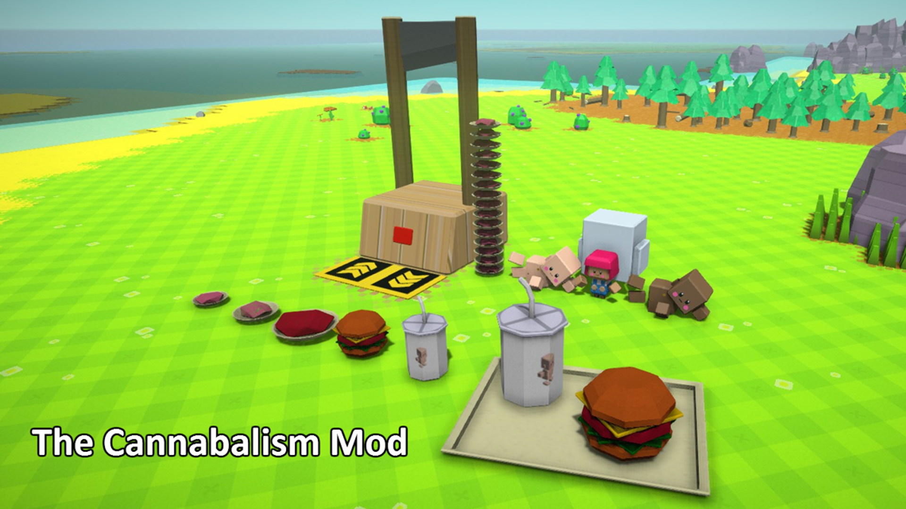

The Cannibalism Mod for Autonauts

When Autonauts came out with their steamworkshop for mods i wanted to make a mod, they made a
competition
on who can make the best mod tool.
I wanted to compete but my only idea for a mod what that you could grind your colonists for food, since they sit around all day wanting stuff from you and in return give a small amount of wuv.
I couldn't just make the mod anyway since there wasn't enough documentation for me.
Lucky for me they added more documentation later on and started a new
competition
where the objective whas to make a mod that adds a new production line to the game.
In the end i came in the top 3 (with no specific order) out of the 7 or so competitors, and i got my very own Automug.
Even though as you can see in the image there are some issues with the chopper.
Link
to the steamworkshop page.